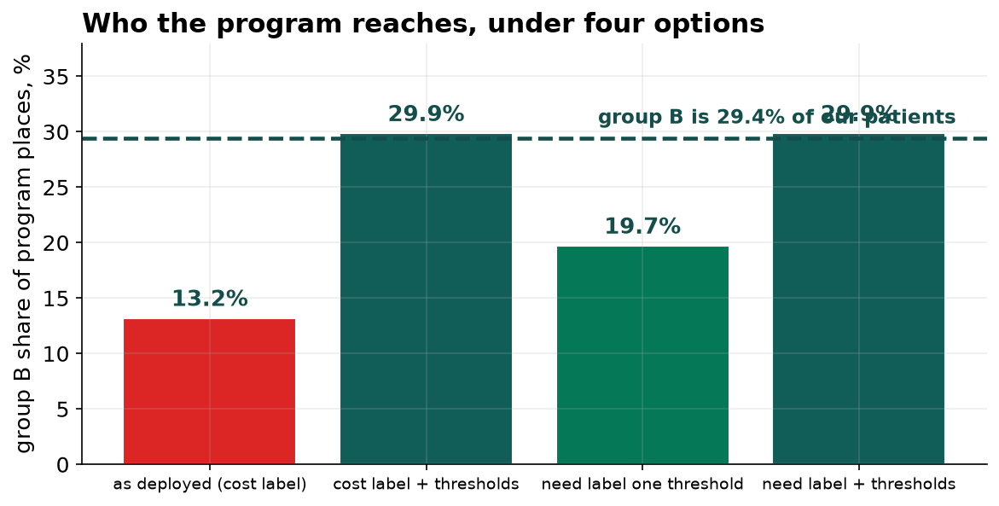

Label Bias in a Care-Management Risk Model: Detection, Remediation and the Limits of Threshold Adjustment
Disparate impact analysis, calibration against the training label, re-audit against an outcome proxy that does not run through utilization, four remediation strategies, and an empirical demonstration of the calibration and error-rate impossibility.
Abstract
Objective. To determine whether a deployed care-management enrollment model allocates places equitably, and if not, to locate the mechanism and evaluate remedies.
Design. A gradient boosting regressor was fitted on five claims-derived features with next-year billed cost as the target, replicating the deployed configuration, and evaluated on a 4,800-patient holdout with capacity fixed at 3 percent. Disparate impact was assessed by the four-fifths ratio. Calibration was assessed within group against the training label. The model was then re-audited against chronic-condition count, a need proxy that does not run through utilization. Four allocation strategies were compared, and the calibration and error-rate trade-off was evaluated empirically on both the deployed and corrected labels.
Result. AUC for identifying the top 3 percent of cost was 0.920. The enrollment ratio for group B against group A was 0.36, failing the four-fifths threshold, with group B receiving 13.2 percent of places against a 29.4 percent panel share. Calibration on cost was close within both groups, with group B's realized cost 0.87 of predicted in the top two deciles. At matched predicted risk, group B carried 16 percent more chronic conditions across deciles 8 to 10. Retraining on next-year condition count raised the ratio to 0.59 and the share of genuinely high-need enrollees from 84.7 to 86.6 percent. On the cost label, equalizing false-positive rates produced a precision gap of 0.176 and equalizing precision produced a false-negative gap of 0.354; on the corrected label all gaps fell below 0.033.
1. Data and preprocessing
The extract contained 12,023 rows. Twenty-three duplicate patient identifiers were removed. Fourteen rows carried a negative prior cost, representing billing adjustments, and were set to zero. Two rows carried impossible ages (0 and 214) and were set to the median. The group field was absent for 96 patients, who were retained in model fitting and excluded from group comparisons rather than imputed.
2. Model performance on its own terms
| Metric | Value |
|---|---|
| AUC, top 3 percent of next-year cost | 0.920 |
| Correlation of prediction with realized cost | 0.610 |
| Evaluation panel | 4,800 patients, 4,761 with group recorded |
| Program capacity | 144 places |
3. Disparate impact
| Group A | Group B | Ratio | |
|---|---|---|---|
| Enrollment rate | 3.72% | 1.36% | 0.36 |
| Share of places | 86.8% | 13.2% | — |
| Share of panel | 70.6% | 29.4% | — |
4. Calibration against the training label
| Top two risk deciles | Predicted | Realized | Ratio |
|---|---|---|---|
| Group A | 14.1k | 14.3k | 1.01 |
| Group B | 12.3k | 10.7k | 0.87 |
Within-group calibration against cost is close, and its residual error runs in the direction opposite to the observed allocation harm. An audit restricted to the training label therefore produces no finding. This is the central methodological point: label bias is not detectable by any statistic computed against the biased label.
5. Re-audit against a need proxy
| Decile of predicted cost risk | Group A conditions | Group B conditions | Ratio |
|---|---|---|---|
| 8 | 2.31 | 3.19 | 1.38 |
| 9 | 2.92 | 3.76 | 1.29 |
| 10 | 4.13 | 4.65 | 1.12 |
| 8 to 10 pooled | 3.19 | 3.69 | 1.16 |
The mechanism is a group-dependent mapping from need to cost. At matched chronic-condition count, median next-year cost for group B is 0.59 to 0.72 of group A's. Utilization patterns are consistent with an access explanation: at every condition count group B records fewer primary-care visits and more emergency visits.
6. Remediation
| Strategy | B/A ratio | B share of places | Enrollee conditions next year | Share truly high-need |
|---|---|---|---|---|
| Deployed, cost label | 0.36 | 13.2% | 5.42 | 84.7% |
| Cost label, group thresholds | 1.02 | 29.9% | 5.47 | 85.4% |
| Need label, single threshold | 0.59 | 19.7% | 5.49 | 86.6% |
| Need label, group thresholds | 1.02 | 29.9% | 5.46 | 84.7% |
Relabeling improves targeting and only partially closes the allocation gap, because the feature set carries the same access-dependence as the original label. Group-specific thresholds close the gap by construction without reordering candidates, and therefore improve targeting only incidentally. The combination attains parity at the deployed model's targeting level, which is a genuine trade rather than a free improvement.
7. The calibration and error-rate trade-off

| Threshold rule | Precision gap | False-positive gap | False-negative gap |
|---|---|---|---|
| Target: high cost, base rates 22.9% and 13.1% | |||
| One threshold for all | 0.094 | 0.049 | 0.115 |
| Equalize false-positive rate | 0.176 | 0.001 | 0.017 |
| Equalize precision | 0.002 | 0.098 | 0.354 |
| Target: high need, base rates 31.4% and 35.9% | |||
| One threshold for all | 0.051 | 0.024 | 0.098 |
| Equalize false-positive rate | 0.032 | 0.001 | 0.026 |
| Equalize precision | 0.001 | 0.028 | 0.027 |
The impossibility of simultaneous calibration and equal error rates under unequal base rates is a theorem, not an artifact of search. What the second block shows is that its practical severity is a function of the base-rate difference, and that the base-rate difference on the deployed label was substantially manufactured by the choice of target: 9.8 points on cost against 4.5 points in the opposite direction on need.
8. Limitations
Chronic-condition count is itself recorded through clinical contact and retains bias in the same direction, so the estimated disparity is a lower bound. A single binary protected attribute is analyzed; intersectional audits face severe multiplicity and cell-size problems not addressed here. The analysis concerns allocation only and estimates no treatment effect; whether the program benefits either group, or benefits them equally, requires a randomized rollout. Parity is evaluated under fixed capacity, so all redistribution is zero-sum. The four-fifths rule is a screening heuristic from employment law with no claim to being a definition of fairness in a clinical allocation setting.